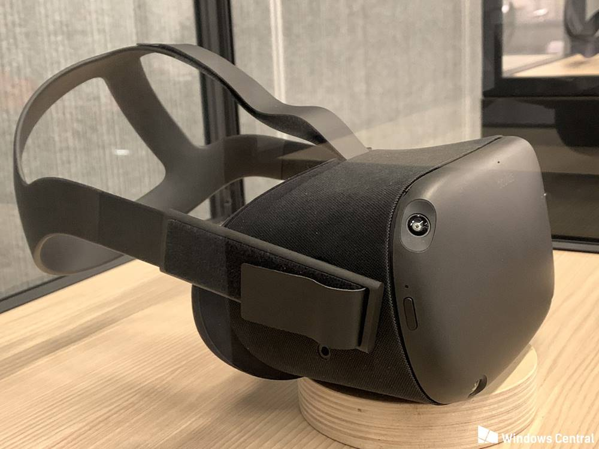

The upcoming standalone headset from Oculus is sure to fill a gap in the VR market.

Oculus is one of the first companies most people think of when it comes to VR, and it's brought popular products like Oculus Rift and Oculus Go to the world. While the Oculus Rift CV2 is still in its prototype stage, Oculus has been working on another HMD this whole time, and it's now been revealed at Oculus Connect 5 as Oculus Quest. It's the final piece of the first-gen Oculus puzzle, and it's a perfect fit as a bridge between the Rift and Go.
Revealed at Oculus Connect 5 in San Jose, we now have an official name — Oculus Quest — for Project Santa Cruz. This all-in-one VR headset features six degrees of freedom (6DoF), internal sensors with no need for external sensors, and updated Touch controllers.
Oculus Quest is expected to be released Spring 2019 and will come with a $399 price tag. More than 50 games will be available at launch, including some Rift favorites like Robo Recall, The Climb, and Moss.
Oculus Quest bridges the gap between Oculus Rift and Oculus Go. First hinted at Oculus Connect 3 and further revealed at Oculus Connect 4, this is a VR headset with inside-out tracking requiring no external sensors, much like the Oculus Go. However, Quest has 6DoF for an experience closer to what the Rift currently offers, yet without the need for a PC and wired connection.
Spatial tracking from within the headset means you can move around an enormous room-scale setup — Oculus Connect 5 has an arena-sized play area — just like you can now in Rift, Vive, or WMR. A camera in each corner of the headset (total of four) track space and motion controllers from the inside out. The Quest uses the same optics as the Go for a display resolution of 1,600 x 1,400 for each eye, but here you'll be able to make lens-spacing adjustments on the fly. Also, like the Go, Quest has a built-in audio system that delivers 3D sound without the need for bulky headphones. A headset jack is included if you'd like to use separate hardware, and charging is handled with a USB-C port.
All the necessary hardware — including the processor, RAM, storage, and rechargeable battery — is worn on your head. Whereas early prototypes showed an extra bundle of hardware on the rear head strap, everything is now contained within the HMD portion. As for an operating system, Quest is expected to run on the Oculus OS, a variation of Android. The processor, which was a big question following the keynote, is confirmed to be a Qualcomm Snapdragon 835.
We've now been shown a final version of Oculus Quest, and it looks a lot like the Rift. It's black, it has a similar head strap (albeit with audio now built into the headband), and a more rounded front with what looks like a bit more space for the internal hardware. A camera in each of the four corners of the front of the HMD makes up Oculus Insight, the new inside-out tracking system that removes the need for external sensors.
Oculus Insight, the new tracking technology from Oculus, is capable of scanning all items in your VR space, including floors, ceilings, walls, rugs, art, windows, and curtains, for a true representation of your place in the real world. It looks for edges and corners and other distinct features, then builds a 3D map of the playspace and combines that data with data from the gyroscope and accelerometer to give the headset's position once every millisecond.
The Guardian system is still here to keep you from bumping into walls and furniture, and you'll now be able to save multiple rooms for quick setup. For example, you'll be able to save your standard VR play space, and you'll also be able to save your friend's living room for when you visit with the Quest and want a quick setup.
Since there are no external sensors, the play space for Quest is enormous. It's unclear what the actual limits are, but you'll be able to at least use it in an arena-sized setting that's about 4,000 square feet.
Along with a new headset, Quest is bringing new Touch motion controllers that are also tracked by sensors in the headset. Much like current Touch controllers, the new Quest controllers have a ring covered in IR lights that are tracked. Here, instead of facing down like on current Touch, the rings face up, making them more visible to the cameras in the headset.
There's less curve to these controllers, making them a bit easier to hold onto, and buttons have been repositioned. The same input and hand presence apply here, and indeed new Touch controllers will be compatible with the older Oculus Rift.
Despite not being connected to a PC, it's clear that Oculus wants to allow developers to be able to port their Rift titles over to Quest quite easily. There will no doubt be some experiences that simply can't run on the Quest's hardware, but for the most part, you should expect a level of quality and immersion that rivals the PC-based VR headsets. As for the display and actual hardware specs, we're still waiting for exact numbers.
Oculus Quest is expected to be released Spring 2019.
Oculus Quest will cost $399 at launch.
· All the big announcements from Oculus Connect 5
· Oculus Rift 2: Everything we know so far
· Oculus Go review: Finally, VR for everyone
{kind=link}
{kind=link}
{kind=link}
{kind=link}